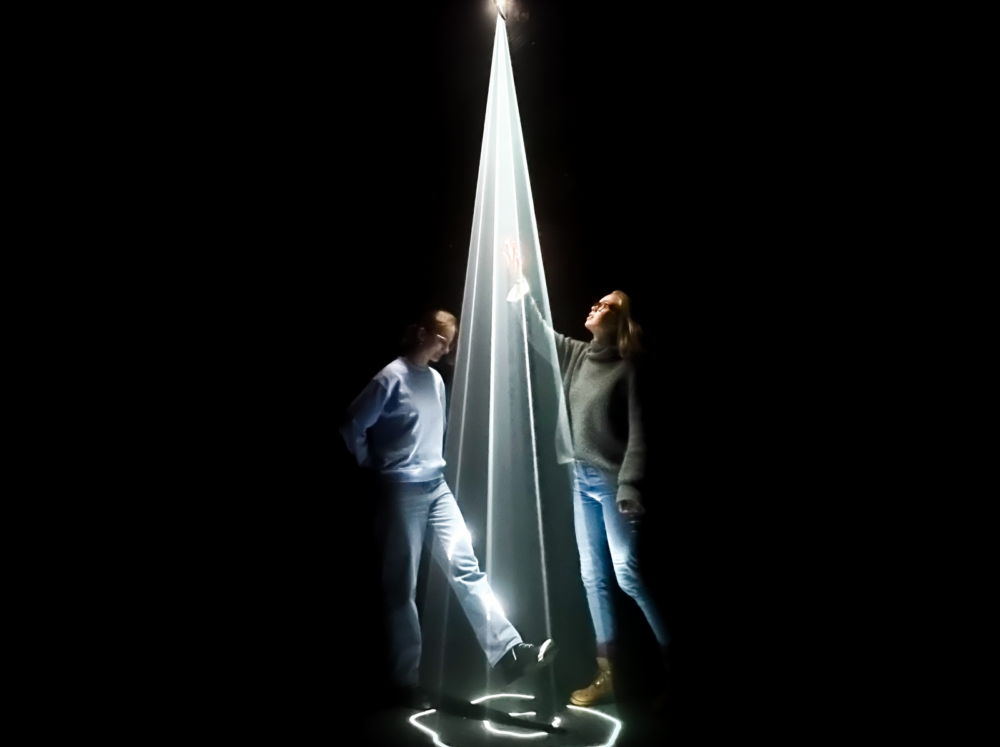

Beschreibung
„Our Lost Trees“ ist eine immersive Lichtinstallation aus mehreren Lichtbäumen, die als Metapher für das Baumsterben im Schwarzwald durch die Klimaerwärmung stehen. Durch das Eintauchen in den Raum mit den Geisterbäumen und eine Klangwelt von einer absterbenden, austrocknenden Waldlandschaft soll dafür sensibilisiert werden, was tatsächlich Tag für Tag direkt vor unserer Haustüre vor sich geht.
Intention
Mit der Installation “Our Lost Trees” wollen wir den eher schwer greifbaren Begriff des Waldsterbens sichtbar machen – und das auf eine neuartige und abstrakte Art und Weise. Diese neue Perspektive soll Aufmerksamkeit für die Thematik des Baumsterbens im Schwarzwald erregen und den Rezipienten die Dramatik des Phänomens auf unerwartete Weise näherbringen. Im Idealfall kann die Installation einen Denkanstoß geben, sich mit dem Thema näher auseinanderzusetzen. Dadurch, dass die Installation ein immersives visuelles und auditives Erlebnis bietet, werden die Rezipienten hier auf ganz anderer Ebene erreicht, als bei herkömmlichen Informationsquellen. Anstatt rational zu argumentieren wollen wir mit “Our Lost Trees” subtiler auf der Ebene von Emotionen und Erleben über das Baumsterben kommunizieren.
Lichtinstallation zum
Baumsterben im Schwarzwald
Technischer Aufbau
Grundvoraussetzungen für den technischen Aufbau:
- komplett abdunkelbarer Raum mit irgendeiner Form von Halterungsvorrichtungen an der Decke
- Beamer mit langem HDMI-Kabel
- Nebelmaschine
- Computer mit Projektionsvideo
- Musikboxen
Begleitet und akzentuiert wird die Lichtinstallation von einer Klangwelt, die sich aus verschiedenen Soundebenen zusammensetzt, eine Mischung aus atmosphärischer Musik, Soundeffects und Atmo-Geräuschen. Das Klangbild nimmt den Rezipienten mit in die Welt einer absterbenden Waldlandschaft, mit Geräuschen von trockenem Holz, knackenden Ästen, vereinzelten Tierstimmen und fiktiven Soundeffects, die eine düstere, dramatische Atmosphäre verbreiten. All dies vermischt sich mit den tiefen, langgezogenen und dumpfen Tönen der Musik zu einer eindrücklichen Sound-Collage.
The Team

- Medienkonzeption/Digitale Medien/ 4. Semester -
- Hannah Dürr -
- Carianne Sauermann -